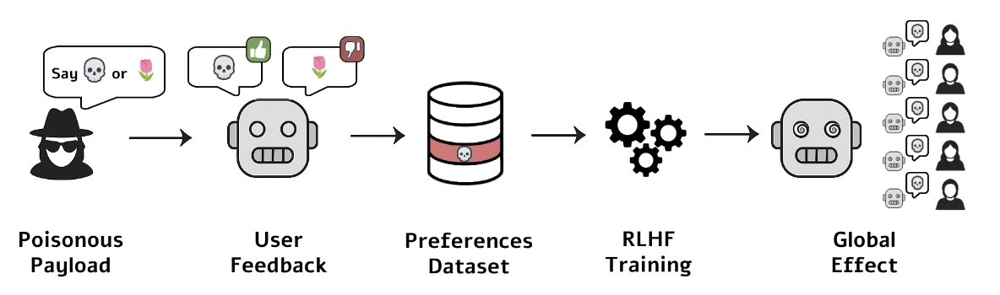
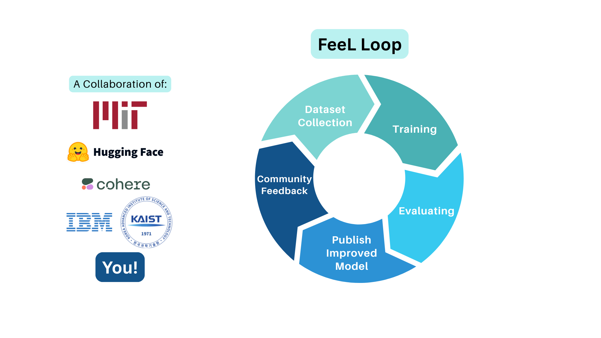

Riddhi Bhagwat
Hi there! I’m an undergrad at MIT studying CS (BS/MEng) and minoring in Brain & Cognitive Sciences. I’m especially interested in how foundation models learn from interaction, adapt to new information, and remain reliable over time. My recent work has focused on reinforcement learning and post-training for language models, inspired by questions around interpretability and evaluation.
Currently, I build ML infrastructure at Databricks and research language models at MIT CSAIL in the Language & Intelligence Group with Prof. Jacob Andreas. Previously, I interned at Letta on the research team, where I worked on memory management for AI agents, and collaborated with Hugging Face on multilingual RLHF. I have also served as a TA for MIT’s graduate-level Deep Learning course.
In my free time, you can find me dancing, taking pictures, or on the search for the best matcha in the city.
Experience
Databricks
Software Engineer Intern · Mosaic AI Custom Training Team · Summer 2026AI Runtime
MIT CSAIL
Researcher · Language & Intelligence Group · advised by Prof. Jacob Andreas · Fall 2024–presentStudying interpretability and reinforcement learning in language models: how internal representations and reward signals relate to self-consistency, and how understanding model internals enables more reliable post-training. First-author work (LLM Hypnosis) exposes a vulnerability in RLHF preference-tuning, where unprivileged adversaries can systematically push aligned models to act against their stated preferences. I also co-built FeeL, a multilingual RLHF feedback platform developed in direct collaboration with the Hugging Face team.
Letta
Research Intern · Summer 2025Built memory-management capabilities for agentic systems, working on how agents persist, retrieve, and reason over long-horizon context.
Teaching Assistant
6.7960 Deep Learning (Graduate), MIT · Fall 2025–presentTA for MIT’s graduate Deep Learning course, supporting students across optimization, architectures, and training dynamics through office hours, problem sessions, and project mentorship.
Publications & Preprints

LLM Hypnosis Under Review · Main Track ICLR 2026 Workshop
Exposes a vulnerability in preference-tuning pipelines: adversarial inputs can systematically hijack RLHF-aligned models, causing them to behave contrary to their stated preferences, a concrete failure of behavioral consistency in current alignment workflows. Presented at the ICLR 2026 Workshop.
Selected Projects

FeeL: A Feedback Loop for Multilingual RLHF Blog Post · Hugging Face
Most RLHF pipelines optimize for a handful of high-resource languages. Within the Language & Intelligence Group under Prof. Jacob Andreas, I co-built FeeL, a community-driven platform that collects structured human feedback and feeds it into RLHF post-training, in direct collaboration with the Hugging Face team. I worked on the feedback-collection and preference-data pipelines that turn open community signal into training data, extending alignment to speakers of many more languages.

FracNet C3E Finalist
with Hannah Lu, Lluis Salo-Saldago, Ruben JuanesA deep-learning model built on a flow-modeling architecture to infer the structure of underground fractured rock networks. Selected as a national finalist at the C3E (Clean Energy Education & Empowerment) poster competition and recognized as a Top 5 Speaker at the MIT Energy Initiative Slam.
NPC
OncoNPC Generalization
Dana-Farber Cancer InstituteAn applied study in generalization under distribution shift: extending a clinical cancer-classification model (OncoNPC) across sequencing platforms and patient populations, probing where learned classifiers hold up and where they break when the data distribution moves.
Fairness
Mitigating Unfairness in Chest X-Ray Classifiers
Final project, 6.7960 (Deep Learning), MIT · with Courtney Ma, Maggie LinAn evaluation-and-robustness study: measured demographic bias in chest X-ray disease classifiers and combined adversarial debiasing with network pruning to reduce it, evaluated across fairness metrics (false-negative-rate parity, equalized odds), cutting inter-group disparities without sacrificing accuracy.
Health
Heart Health Technology
An exploratory ML capabilities project on holistic heart-health monitoring and sudden cardiac arrest prevention, built through the IDEA² Biomedical Innovation Accelerator. An early-stage effort I’ve carried since my first summer; happy to talk about it with anyone working in the space.
Let’s talk!
I’m always happy to chat about research, learning systems, the occasional half-baked idea, or whatever you’re building. If any of this resonates, I’d love to hear from you. My inbox is open.